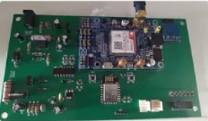

Monitoramento e transmissão de dados
Projeto coleta de dados
Desenvolvimento de um sistema que monitora parâmetros de uma temperatura e umidade de diferentes ambientes com variações de temperatura entre -50ºC até 125ºC